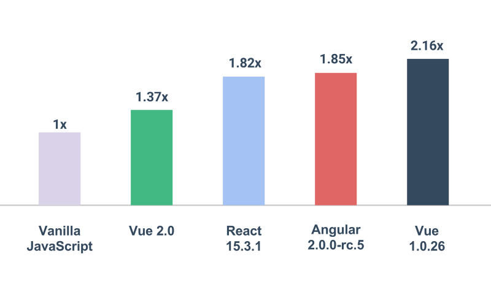
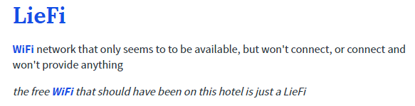
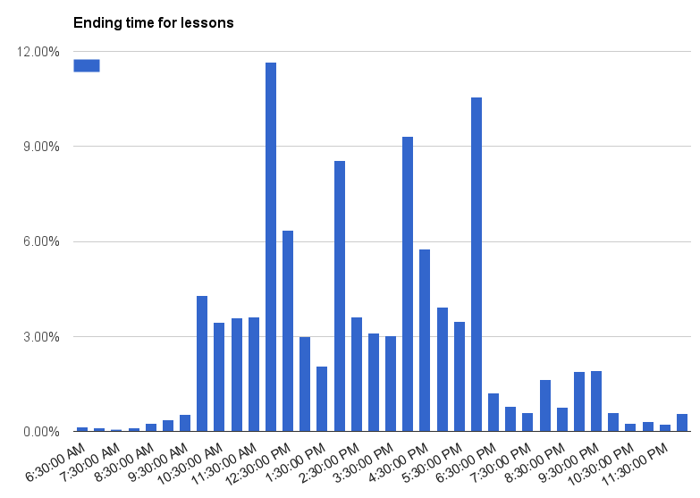
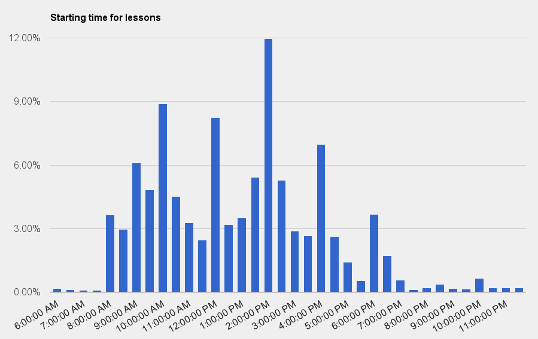

NUSMods 3.0
Living on the cutting edge
Hi, I'm Li Kai
I built Modify.sg
And I'm Yang Shun
I work at Grab, built NUSMods and founded NUSWhispers.
Outline
- Modify.sg
-
NUSMods v3.0
- New Application Architecture
- Technical Challenges
- Moving Forward
Motivation
It's time for
A little demo
Modify was built with VueJS
Why Vue?
Easy to learn
-
{{ todo.text }}
It is fast.
It's getting increasingly popular
“But if you look at percentages, it turns out the uncontested leader is instead React. What's more surprising is Vue's performance, coming second by both measures [Interest and Satisfaction].”
Just for Fun: Parsing NTU
Crawling with Scrapy I thought this was a Javascript talk?
NTU load their data in an iframe.
Steps:
- Get the iframe url
-
Url has a subject code search parameter"...&r_subj_code=CS&boption=Search"
-
How do we get all modules?Pass in nothing!"...&r_subj_code=&boption=Search"
Modern HTML layout
Community
Easy to parse via selectors
Layout using tables
AC2103
RISK MANAGEMENT, CONTROL AND ETHICS
4.0
ACC
Prerequisite:
AC2101(Corequisite) & AC2401(Corequisite) & AC3101
Mutually exclusive with:
AA205, AC3104
No well defined layers
Solution?
Select using color tags
Select using   that was in between each module somehow
A brief introduction to NUSMods
What does NUSMods stand for?
- NUS Modules?
- NUS Moderators?
- NUS Modifications?
Naming is one of the hardest things in Computer Science.
Goals and Objectives
- Enhance the quality of lives and school experience of NUS students
- Provide a platform to encourage students to experiment and create original community-engaging work via NUSMods API.
Timeline
- 2012 - Official timetable not usable. Unofficial version was Windows only. Beng built a jQuery version.
- 2014 - Rebuilt by Beng and Yang Shun using Backbone and Marionette. Many features were added.
Evolution of NUSMods
Version 0.1 - CORSet
Version 1.0 - NUSMods Beta
Refresh the page if it doesn't loadNUSMods v3.0 collaboration
It started with a Github issue

Key Considerations
- Mobile first
- Increased mobile penetration
- Optimize for performance
- Low end devices
- Poor network connectivity
- Maintainability
Engineering Philosophy
Nimble but stable
- Easily understandable
- Ease onboarding for new developers
- Standardized coding style
- Documented code
- Write future-proof code
- Well-tested
- Component/plugin-based architecture and workflow
Stack Evolution
| Old | New | |
|---|---|---|
| Bundler | Grunt + Browserify | Webpack |
| Language | ES5 | ES6 / Babel By Facebook |
| Package Manager | NPM | Yarn By Facebook |
| JS Framework | Backbone + Marionette | React + Redux By Facebook |
| Type | N/A | Flow By Facebook |
| Tests | N/A | Jest By Facebook |
V3.0 Client App Stack
View - React
- Declarative
- Say what you want, instead of how you want
- By looking at the template code, you know how the final markup will look like
- Fewer hops in logic required
- Predictable
- UI is a function of state:
render(data) -> view - Given this set of data, A, the rendered output will definitely look like B
- UI is a function of state:
- Good for interactive apps where changes to app state can be made from many places.
Logic - Redux
- Flux architecture
- Single, Global State Tree
- Single source of truth. Data stays in sync for different parts of the application.
- Undo/redo made easy
- Changes are made with pure functions
- Reducers are pure functions that take the previous state and an action, and computes the next state.
reducer(state, action) -> nextState
ADD_MODULE action
function addModule(moduleCode, lessons) {
return {
type: 'ADD_MODULE',
payload: {
moduleCode: moduleCode,
lessons: lessons
}
};
}
timetable reducer
function timetable(state, action) {
switch (action.type) {
case 'ADD_MODULE':
var newState = Object.assign({}, state);
newState.modules.push(action.payload.moduleCode);
newState.lessons.push(action.payload.lessons);
return newState;
default:
return state;
}
}
Types - Flow
- Catches common bugs in JavaScript code before they even run
// @flow
function foo(x) {
return x * 10;
}
foo('Hello, world!');
- Implicit form of documentation
type Module = {
AcadYear: string,
CorsBiddingStats: Array<BiddingStat>,
Department: string,
ModuleCode: string,
ModuleCredit: string,
ModuleDescription: string,
ModuleTitle: string,
Preclusion?: string,
Prerequisite?: string,
Types: Array<string>,
Workload?: string
};
type Lesson = {
ClassNo: string,
DayText: string,
EndTime: string,
LessonType: string,
ModuleCode: string,
StartTime: string,
Venue: string,
WeekText: string
};
Key Considerations Revisited
Mobile First
Develop for the phone first, using Chrome/Firefox's mobile debugger
Use media queries intensively
Alternative to edit lessons: Tapping vs Drag n Drop
Courage
Drag n Drop too unintuitive
Clicking is easier, faster and less technically challenging
Good bye DnD
Theme Colors
Modify.sg
- Picked from Material Design palette
- Accessibility testing
V3
- Killing of unpopular colors
- The feature everyone wanted: Color pickers
Search Implementation
Current
All substrings are included, module codes' ranking come after descriptions
V3
Smarter rankings, less typing!
Offline first
Better experience for people
Especially important for mobile devices
How?
Service Workers
No access to DOM but can intercept requests
Does much much more, but...
Poorly supported in Safari
Flexible start/end timings
We realised lessons that start at 6am exists
So did lessons that ended at midnight
So which hours do we present?
Analysis!
Plot out all lessons' start and end time for this semester
~90% of lessons lie between 10am and 7pm
Graphs
More Graphs!
Perhaps this is why the buses are so packed?
Horizontal / Vertical Mode
Problem arised when:
NTU people complained about horizontal mode.
NUS people complained about vertical mode.
Solution: Toggle-able orientations
Timetable Implementation
A tale of tables, boxes and blocks
A simple timetable
First Attempt
Tables
Too difficult to work with. Tables are not responsive.
Second Attempt
Flexbox
Flexible, but difficult to master.
Also, many cross browser bugs. Curse you safari !
Third Attempt
Inline-block
Getting close to behavior we want
You see where this is going
V3.0 Demo
Timetabling Algorithm
Series of data transformations
type Lesson = {
ClassNo: string,
DayText: string,
EndTime: string,
LessonType: string,
ModuleCode: string,
StartTime: string,
Venue: string,
WeekText: string
};
Starts with an array of Lessons
Group Lessons by Days
// from
[LessonA, LessonB, LessonC, LessonD, ...];
// into
{
Monday: [LessonA, LessonB, LessonC],
Tuesday: [LessonD, ...]
};
Arrange Lesson within each Day
// from
{
Monday: [LessonA, LessonB, LessonC],
Tuesday: [LessonD, ...]
};
// into
{
Monday: [
[LessonA, LessonB],
[LessonC],
],
Tuesday: [
[LessonD, ...]
],
...
};
Generic useful timetable representation
Detailed explanation found here
NUSModerator.js Library
https://github.com/nusmodifications/nusmoderator
Utlity toolbelt for nus applications
- Academic week calculation
- TBD: Timetable generation algorithm and various utility functions. You can build your own timetabling client
- TBD: Matric number letter calculation
- TBD: Wrapper for NUSMods API
The Future
- Dominate timetabling for Singapore universities
- React Native app making use of NUSModerator.js library
Advice for new blood
JavaScript is fatigue is real and it's here to stay.
Learn to embrace it.
Back to basics
- Write ES5, not ES6/ES2015.
- jQuery + CSS, then MVC frameworks and Sass.
- Start development without frameworks/libraries.
- Don't learn frameworks, learn principles.